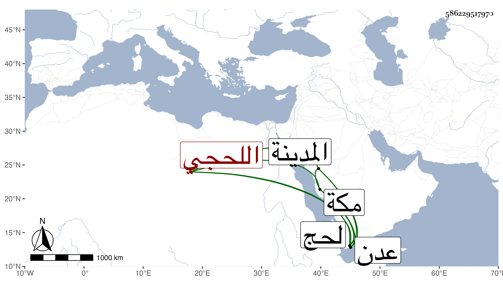

0902Sakhawi.DawLamic.ITO20230111-ara1.EIS1600.586229517970
Biography ID: 586229517970
95
عبد الله بن عبد الكريم بن أحمد بن محمد بن أحمد ويلقب مشقرة بفتح الميم ثم معجمة ساكنة بعدها قاف مضمومة وأخره راء بن محمد بن إبراهيم العفيف السبائي اللحجي نسبة لوادي لحج من أعمال عدن بينهما مسافة العدوي اليماني الشافعي ويعرف كسلفه بابن عجيل لكون تمام تفقه مشقر في نسبه بأحمد بن موسى بن عجيل بل لما ودعه ليرجع لمحله أوصاه بأنه إذا ولد له يسميه باسمه وكان كذلك . ولد في جمادى الأولى سنة ثلاث وستين وثمانمائة بلحج ونشأ بها فحفظ القرآن عند حسن بن أويس البركاني المتوفى سنة سبع وسبعين والحاوي وألفيات الحديث والنحو والأصول وعرض أولها على الفقيه محمد بن أحمد بن علي بن عبد الله أبا فضل الماضي وقرأ عليه الصحيحين وتفقه بقاضي الأقضية عبد الرحمن بن الطيب الناشري وبقاضي زبيد محمد بن عبد السلام وأخذ العربية عن القاضي عبد الرحمن بن صديق المطيب الحنفي والفقيه عبد اللطيف ابن موسى المشرع والجبر والمقابلة والحساب عن صديق العريب والفرائض عن الطيب بن إسماعيل بن مبارز ، وحج في سنة ثمانين ثم في سنة ثمان وتسعين ولقيني بالمدينة النبوية فقرأ على الترمذي وغيره ومن أول شرح ألفية العراقي للناظم إلى أقسام الحديث وسمع على أشياء ومن ذلك في البحث الكثير من شرح الألفية والتقريب وكتبه بخطه وله فضل وحرص على التحصيل ومشاركة مع عقل وتودد وحسن عشرة ورجع إلى مكة فلقيني بها أيضا ولما انتهى الموسم رجع إلى بلاده أسعده الله ببلوغ صالح مراده .
